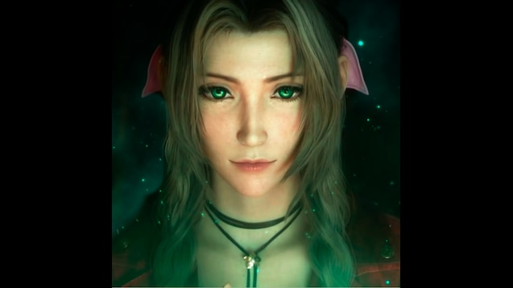

Lista inclui continuação de Final Fantasy VII Remake, sequência de exclusivo do Xbox e novos capítulos de franquias.
O ano de 2023 foi recheado de grandes lançamentos para todos os gostos e plataformas, de títulos de mundo aberto com altos orçamentos até fenômenos independentes que conquistaram o mundo de forma repentina.
Alguns períodos foram tão carregados de jogos de peso que adiamentos foram realizados para evitar que um título fosse ofuscado por rivais. Para 2024, o calendário de games ainda está se desenhando e parece em um ritmo um pouco menos acelerado.
Ainda assim, são vários os jogos muito aguardados e alguns meses já acumulam estreias próximas. A seguir, confira a lista parcial do Adrenaline com a seleção dos games que mais esperamos nos próximos meses e já estão pelo menos confirmados para o próximo ano.
Um dos primeiros destaques de 2024 em games é Prince of Persia: The Lost Crown, da Ubisoft. Situado no fictício Monte Qaf, o título marca o retorno da franquia ao formato de ação 2D, com elementos de metroidvania e “controle sobre os limites do tempo e espaço”.
O jogo sai em 18 de janeiro para PS5, Xbox Series X|S, Nintendo Switch, PC, PS4 e Xbox One.
O novo capítulo da duradoura franquia de jogos de luta da Namco tem 32 lutadores, de velhos conhecidos até novas adições.
O jogo apresenta um novo sistema de batalha, o Heat, que recompensa você por adotar um estilo de luta ofensivo e agressivo. Além da campanha, que conta mais um capítulo envolvendo as famílias Mishima e Kazama, estão confirmados para Tekken 8 o novo modo Arcade Quest e o retorno do mini-game Tekken Ball.
Tekken 8 estará disponível a partir de 26 de janeiro para PS5, Xbox Series X|S e PC.
Esse RPG do P-Studio publicado pela Sega é um remake de Persona 3, título de 2006. O título está em desenvolvimento desde 2019 e mantém a história original, porém promete uma série de melhorias gráficas e adições na jogabilidade, além de um novo tema de batalha.
Persona 3 Reload será lançado em 2 de fevereiro de 2024. O jogo sai para PS5, Xbox Series X|S, PS4, Xbox One e PC, chegando diretamente ao catálogo do Game Pass.
Novo capítulo da franquia antes conhecida no ocidente como Yakuza, Like A Dragon: Infinite Wealth é na verdade o oitavo título numerado da saga. O protagonista aqui é novamente Ichiban Kasuga, agora em uma saga para encontrar a própria mãe.
Além de misturar um drama épico e bem humorado com fórmulas de exploração em mundo aberto e combates por turnos, a desenvolvedora já confirmou que esse será o jogo mais longo da franquia.
O título chega em 26 de janeiro para PS5, Xbox Series X|S, PC, PS4 e Xbox One.
Há quem acredite que Skull and Bones, da Ubisoft, nunca veria a luz do dia. Inspirado nas batalhas marítimas de Assassin’s Creed IV: Black Flag, o título começou a ser produzido em 2013 e já passou por diversos adiamentos — além de várias alterações no projeto, incluindo a saída de mais de um diretor criativo.
Atualmente na fase de testes, o jogo promete colocar o jogador na pele de um marujo que passa “de pária a chefe pirata mais temido de todos”.
Skull and Bones será lançado no dia 16 de fevereiro nas plataformas PS5, Xbox Series X|S e PC.
Talvez um dos mais aguardados de toda a lista, o jogo é a segunda parte da nova versão de Final Fantasy VII pela Square Enix e deve ter 40 horas de duração na campanha principal.
O título parte exatamente de onde Final Fantasy VII Remake terminou e terá novos sistemas e mecânicas, com dificuldade dinâmica e um mundo mais aberto que o anterior. Ele também deve “alterar” ainda mais elementos da história original e contará com uma recapitulação da história para quem precisa refrescar a memória.
Final Fantasy VII Rebirth chega ao PS5 em 29 de fevereiro de 2024 e tem exclusividade temporária no console.
Criado com elementos de “jogo de serviço” pela Rocksteady Studios, da franquia Batman Arkham, o jogo do Esquadrão Suicida deveria ter saído ainda em 2022.
Ao todo, são quatro personagens jogáveis (Arlequina, Pistoleiro, Capitão Bumerangue, Tubarão-Rei) e uma história original envolvendo os principais heróis da DC Comics. A jogabilidade envolve mapas vastos e bastante verticalidade, com uma recepção mista por parte da comunidade.
O jogo sai em 2 de fevereiro de 2024 para PS5, Xbox Series X|S e PC.
Esse é um caso curioso. A reimaginação da franquia Alone in the Dark foi adiada por motivos de calendário. O jogo de terror sairia em outubro deste ano, mas a presença de vários títulos de peso no período — como Alan Wake 2, Marvel’s Spider-Man 2, Assassin’s Creed Mirage e Super Mario Bros. Wonder. Depois, ele foi adiado de novo, agora para março, para evitar crunch (período intenso de trabalho cheio de hora extra) no Natal.
Com aspectos da cultura gótico sulista, a trama se passa na mansão Derceto e narra a investigação dos mistérios do local por Edward Carnby (interpretado por David Harbour) e Emily Hartwood (Jodie Comer).
O título sai em 20 de março para PS5, Xbox Series X|S e PC.
Demorou algum tempo, mas a princesa Peach finalmente ganhou um jogo solo. O título de aventura Princess Peach Showtime! tem uma identidade visual própria e vários elementos de jogabilidade. Na trama, um item misterioso transforma a personagem em uma espécie de atriz de teatro, que precisa usar habilidades diferentes de acordo com o cenário.
Princess Peach Showtime! é exclusivo do Nintendo Switch e será lançado em 22 de março de 2024.
Mais ambicioso que o jogo anterior em vários aspectos, a aguardada sequência do RPG de ação da Capcom pretende ser “a experiência definitiva da série”. Dragon’s Dogma 2 promete uma física realista, um mapa mais vasto e batalhas com criaturas ainda maiores, sem eventos scriptados. Por outro lado, esse será o primeiro título da Capcom sob o preço de US$ 70.
Dragon’s Dogma 2 sai em 22 de março para PS5, Xbox Series X|S e PC.
Novo projeto da Team Ninja (de Nioh), Rise of the Ronin se passa durante o período histórico da queda do regime Tokugawa no Japão. Você é um ronin, um samurai sem mestre, que “tem o destino ligado” a figuras importantes daquele período. A jogabilidade lembra a franquia anterior do estúdio em alguns elementos, porém a partir de um combate mais realista e com maior variedade de armas.
O título também está previsto para sair em 22 de março de 2024 e é exclusivo do PlayStation 5.
O jogo pós-apocalíptico S.T.A.L.K.E.R. 2: Heart of Chornobyl teve um desenvolvido conturbado não apenas por questões técnicas, mas também por causa da invasão da Ucrânia pela Rússia.
Misturando terror com tiro em primeira pessoa, o título se passa em uma Zona de Exclusão “repleta de inimigos perigosos, anomalias letais e artefatos poderosos”. Fora a campanha, o título terá suporte oficial a mods e um modo multiplayer lançado no futuro.
S.T.A.L.K.E.R. 2 sairá para PS5, Xbox Series X|S e PC nos primeiros meses de 2024.
Black Myth: Wukong é um RPG de ação com características soulslike desenvolvido por um estúdio chinês chamado Game Science. O título ganhou fama pela divulgação de materiais de gameplay ainda em 2020, que revelavam um combate dinâmico e graficamente impressionante.
Feito a partir da Unreal Engine 5, o título usa elementos místicos do folclore chinês do Rei Macaco e o romance mitológico Jornada ao Oeste. O estúdio confirmou durante a The Game Awards que o jogo será lançado em 20 de agosto para PS5, Xbox Series X|S e PC.
Criado pela The Chinese Room, o jogo Vampire: The Masquerade – Bloodlines 2 mistura elementos de ação com o universo do RPG de mesa Vampiro: A Máscara, que deu origem à franquia. A desenvolvedora promete uma imersão completa em uma Seattle à beira de uma guerra envolvendo vampiros.
O título terá um “combate imersivo e visceral” que mistura persuasão com poderes sobrenaturais e permite que você “ascenda na sociedade vampírica ou se rebele contra ela”, inclusive escolhendo um clã vampírico para fazer parte.
Já desenvolvido há algum tempo, o jogo tem previsão de lançamento para o terceiro trimestre de 2024.
Remake do jogo lançado para o GameCube em 2004, Paper Mario: The Thousand-Year Door terá gráficos aprimorados sem alterar tanto a essência do título original — que foi bastante elogiado pelos diálogos, o sistema de parceiros e as mecânicas criativas de batalha por turno e navegação em um mundo 2D.
O jogo sairá apenas no Nintendo Switch e está previsto para algum momento de 2024.
Criado pela Ninja Theory, Senua’s Saga: Hellblade II é o jogo narrativo que dá sequência aos eventos de Hellblade: Senua’s Sacrifice. Segundo a sinopse oficial, a trama gira em torno de Senua “em uma jornada brutal de sobrevivência através da lenda e tormento da Islândia Viking”, para “aqueles que foram vítimas dos terrores da tirania”. Até o momento, poucos detalhes foram divulgados sobre o projeto e o título ainda não tem uma data definitiva.
O lançamento acontecerá em algum ponto de 2024 para Xbox Series X|S e PC.
Desenvolvido pela Ubisoft, Star Wars Outlaws é um jogo de exploração e mundo aberto que se passa longe dos conflitos épicos da família Skywalker ou envolvendo o futuro das galáxias.
Aqui, você controla uma vigarista chamada Kay Vess que simplesmente precisa encontrar meios para sobreviver. O título também vai focar em diálogos e negociações e não será “um RPG infinito de 300 horas”.
Star Wars Outlaws será lançado em um momento ainda não confirmado de 2024 para PS5, Xbox Series X|S e PC.
A sequência do primeiro Hades será lançada em Early Access no segundo trimestre de 2024 nas plataformas Steam e Epic Games Store. Segundo a Supergiant Games, essa versão prévia já terá “ao menos tanto conteúdo quanto o jogo original tinha quando saiu em Early Access” — o que já é o suficiente para ele virar um dos títulos mais desejados da loja digital Steam.
O título não estará completo, mas já deve ter uma quantidade considerável de conteúdo envolvendo uma nova protagonista: Melinoe, a irmã de Zagreus e princesa do Submundo.
E aí, qual dos jogos acima é o que você mais espera para 2024? E para qual você não está tão empolgado assim? Conte para a gente nos comentários! 😁
Vale lembrar que deixamos de fora vários títulos que não tiveram o ano listado como data prevista de lançamento. Além disso, essa seleção pode ser atualizada na medida em que confirmações e adiamentos forem revelados. 😊